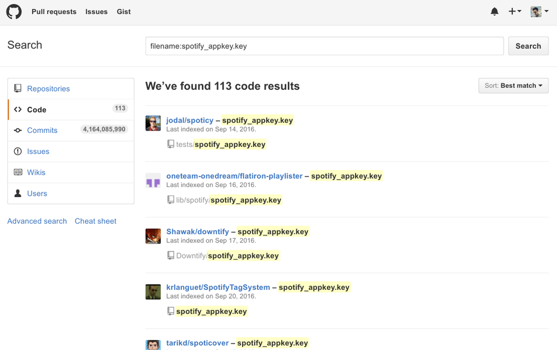

Maybe you don't want to go through an arduous registration process, maybe the API you want to use is deprecated and no longer issuing new keys (libspotify plz), or maybe something else altogether. In any case, worry not, there is a better way. Short post today, look out for something bigger soon. ❤️️
Turns out that a surprising number of people push their secret API keys to GitHub. Perhaps by mistake, or maybe they just don't care, but this means that it should be pretty easy to acquire one for our own purposes from an abandoned project. In my example, libspotify keys are stored in a file called spotify_appkey.key, so we should just be able to search GitHub for files with that name.
 The search results for 'filename:spotify_appkey.key'
That's 113 keys that are freely available online! Not too shabby. We can use these for basically anything we want, most of the projects are abandoned. Remember though, with great power comes great responsibility; don't do anything stupid :)
See ya,
kidcontact